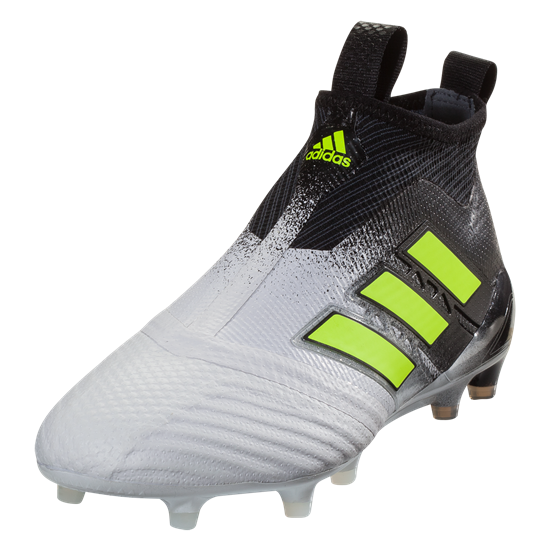
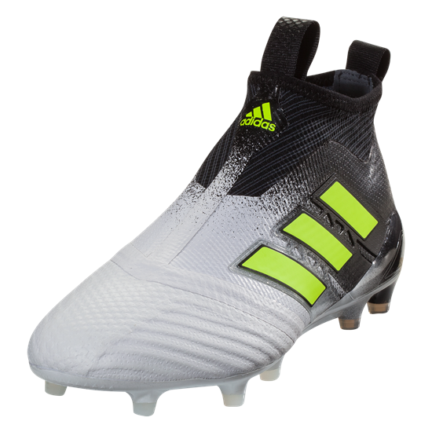

Football boots, also known as cleats or soccer shoes in North American English,[1] are a type of shoe worn when playing association football (soccer), most of its variations, and some games that are played on the same surface. Those designed for grass pitches have studs on the outsole to aid grip. Modern "boots" are no longer truly traditional boots in that they do not cover the ankle — like most other types of athletic footwear, their basic design and appearance have converged with that of sneakers since the 1960s. A variation of the boots are worn for rugby football featuring several key design differences specific to that sport and are therefore known as rugby boots in that context; although boots designed for soccer are often used by rugby players in certain positions. Although most associated with football and rugby, the shoe is often used in other sports that are played on grass surfaces, such as touch, lacrosse, hurling, shinty, and even tug of war.
Many players use personalization around the world to improve the look of their boots and to make them easily identifiable in the club dressing room. It is now very common to have football boots fully personalized with either a name, initials, number or club logo. Professional players such as Lionel Messi, Cristiano Ronaldo, and Neymar have all personalized their boots in some way, either by including their number, the names of their children, or just a flag.[24][25] Many retailers offer various options and colors to personalize football boots by using the embroidery machinery, such as Nike, Adidas, and Puma. Customization process takes place not only to highlight player's number or initials, but also to make boots more comfortable. Shortening a tongue, trimming hill, rearranging studs or even using a particular leather has become a common way to increase a comfort level of football boots. One of many examples is English player Declan Rice, who has more than 25 modifications to his AdiPure 11 Pro boots.[26]